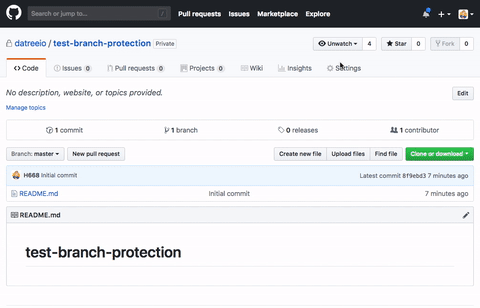
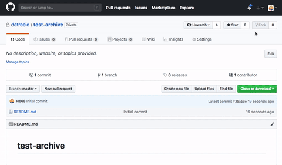
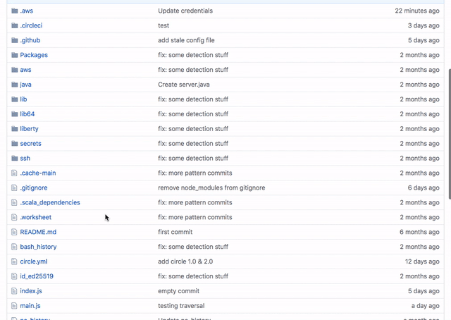

十大GitHub最佳实践
目录
从 https://datree.io/blog/top-10-github-best-practices/ 看到的，记录一下
不允许直接提交到主分支
为了保证主分支上的代码总是经过CI验证，我们可以使用GitHub的 分支保护 功能来防止直接提交代码带主库，所有代码都必须通过pull request提交。

确保git配置的邮箱地址是正确的，且与GitHub用户相关联
这样才能有效地追踪谁提交的代码
为每个仓库定义代码所有者(CODE OWNER)
CODE OWNER 功能可以为仓库设置默认的代码审查人/组织

代码中不要包含密码，密钥，Token之类的机密信息
可以通过 pre-commit hook 来在代码提交前检查是否包含机密信息
不要将依赖提交到仓库中
提交依赖会极大的增加仓库的占用空间，但是却没什么意义。这些依赖关系应该通过包管理工具来自动下载。
源代码中不要包含配置文件
配置文件会根据环境的不同而改变，而且常常包含机密信息。因此不推荐直接包含配置文件，而是用配置模板代替
创建合理的.gitignore文件
及时归档不再维护的仓库
将仓库归档可以很好地告诉别人 “这个仓库已经不再维护了”

锁定依赖包的版本
对于喜欢追求最新版package的同学可以考虑使用 dependabot 帮你追踪最新的依赖包。

尽可能在不同项目中使用相同版本的package
使用不同版本的package意味着无法在不同项目间共享代码和测试。